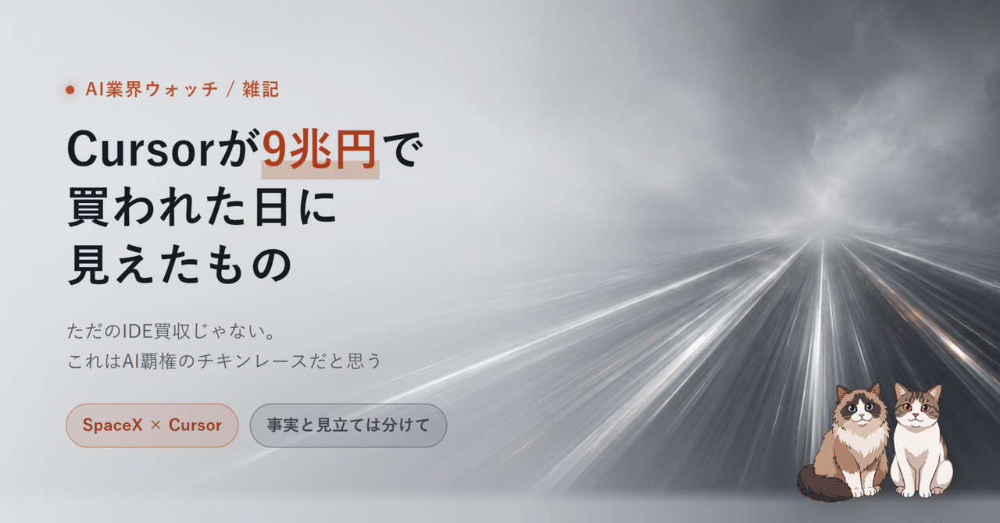

SpaceX が AI コードエディタ Cursor の開発元 Anysphere を 600 億ドル（約 9 兆円）で買収する、という報道を見て、最初は「VS Code をフォークしたエディタに 9 兆円?」と思った。けれど買収前後で並んでいた事実をつなげると、これは「エディタの値段」ではなく「AI という山ぜんぶの、てっぺんから地面までを握りにいく値段」に見えてくる。事実と、自分の勝手な見立てを、混ぜないように分けて書いたメモ。
まず、自分の意見を抜いて、開示や報道で確認できている事実だけを並べる。ここが見立てと混ざると一番たちが悪い。
金額そのものより、私が引っかかったのは「同じ数日の中で並んでいた他の事実」のほうだった。
ここも全部、報道ベースの事実。これらを並べてみると、エディタ会社の買収という感じが急にしなくなる。
もう一つ、買収と同時期に出てきていた話。Cursor の立ち位置そのものが変わろうとしている。
少し前まで、Cursor は他社の頭脳（Claude や GPT）を借りて、開発者にとって気持ちいい道具を作る会社だった。自分でモデルを作る会社ではなかった。
ところが、すでに「Composer」という自社モデルがあり、2026 年 3 月に出した Composer 2 は同社初の自前フロンティアコーディングモデルだった。ただしこの世代は、外部のオープンソース土台モデルを下敷きにした改造ベース。
そして買収と同じ時期、こんどは 下敷きを使わず、モデルを一から（from scratch）自前で学習させる という発表が出てきた。報道によると、Cursor は SpaceXAI と組んで Colossus の上で、これまでの約 10 倍の計算資源を使い、1.5 兆パラメータ超とされる大型モデルをゼロから訓練している。既存モデルの微調整段階を、はっきり越えにいっている。公開日や性能数値はまだ出ていない。
ここまでが、確認できる事実の側。ここから先は私の勝手な見立てになる。
金額の回収から考え始める。Cursor の年間売上を 40 億ドル、利益率 20% と 雑に置いて 試算すると、年間利益は 8 億ドル。9 兆円を利益だけで回収しようとすると、ざっくり 75 年。利益率 30% でも 50 年。実際の数字ではなく仮置きだが、「Cursor 単体が将来稼ぐ利益で元を取る買収ではなさそうだ」という方向感は言ってよさそうに思う。
しかも今回は、現金ではなく上場直後に跳ねた株での支払い。だとすると、これは「Cursor の事業価値ぶんのお金を払った」というより、別のものを買っている気がする。
少し前までは、エディタ（IDE）があってその中の便利機能として AI が乗っている構造だった。主役は人間が使うエディタで、AI は脇役。
でも今は逆になりかけている。AI が真ん中にいて、その下にターミナル・エディタ・ブラウザ・GitHub・データベース・クラウドがぶら下がる。AI が主役で、人間向けの道具がそれに従属する、という向きだ。この向きが本当なら、「開発者が AI に最初に触れる入口」を押さえる意味は、ただのエディタのシェアとは違う重さになる。
下から積み上げると、こうなる。
電気をどこで起こすか、というところから、開発者が朝いちばんに開く画面まで。AI にまつわる 縦一本の柱 を、ぜんぶ自前で持とうとしているように見える。
おもしろいのは、その計算資源をライバルの Anthropic にまで貸していること（これは事実）。柱の土台がそれだけ太いと、競合まで自分の地面の上で動くことになる。9 兆円は、この柱のいちばん上のピースを買った値段なんじゃないか、というのが私の推測。
自分の中には逆向きの疑問もある。これも推測。
今後の主流は、エディタ中心ではなく、もっとエージェント中心の環境になる気がしている。Claude Code、Codex、Gemini CLI、Grok のビルド機能。どれもエディタの画面に閉じこもらず、ターミナルや OS 全体を直接操作していくタイプだ。
開発者の仕事はコードを書くだけじゃない。PR を作る、Issue を読む、ログを掘る、DB を確認する、ブラウザで動作を見る。これはエディタの中だけでは閉じない。だとすると、AI がエディタの外まで含めて全部やる方向に進むほうが自然に見える。
もしそうなら、Cursor が今握っている「エディタという入口」の優位は、ずっとは続かないかもしれない。さらに、AI が賢くなるほど開発者 1 人あたりの生産性は上がり、必要な開発者の数そのものが減るかもしれない。エディタへの課金で成り立つ前提も、そこで揺らぐ。柱を縦に全部持っていても、いちばん上のピースが時代遅れになる可能性は消えていない。
事実に戻る。SpaceX は上場 4 日後の跳ねた株で 9 兆円を払い、ライバルに GPU を貸しながら、宇宙にデータセンターを上げる申請まで出している。OpenAI のサム・アルトマン氏は、その宇宙データセンター構想を「ばかげている」と一蹴したと報じられている。それでも、この値段とこの規模で突っ込んでいる。
ここから先はまた見立て。OpenAI、Anthropic、Google、そして xAI を抱えた SpaceX が、それぞれ自分の頭脳に計算資源も入口も全部くっつけようと、ものすごい速さで突っ込んでいるように見える。もう、製品の良し悪しだけの競争ではなく、電力と土地と GPU と、最後は宇宙まで賭けにいく勝負になっている。
誰も減速しない。減速したら、柱のどこか一段を他陣営に取られるから、降りられない。
これはもう勝者が決まっているレースではなく、計算資源ごと全部を賭けて全員が横並びで突っ込んでいくデッドヒートのチキンレースだと思う。今がまさにその真っ最中で、Cursor がてっぺんに立ち続けるのか、別の流れに飲まれるのか、まだ誰にも分からない。9 兆円は、その分からなさに賭けた値段なんだろうな、と。
群馬の田舎から眺めているだけの立場で、勝者を当てる気はない。ただ、どっちに転ぶかは見届けたいので、自分の手元の道具がどの柱の上で動いているのかだけは、これからも静かに観察していこうと思う。
事実として書いた部分の根拠。仮説・見立ての部分は、これらの事実をもとにした自分の解釈であって、各ソースの主張ではない。